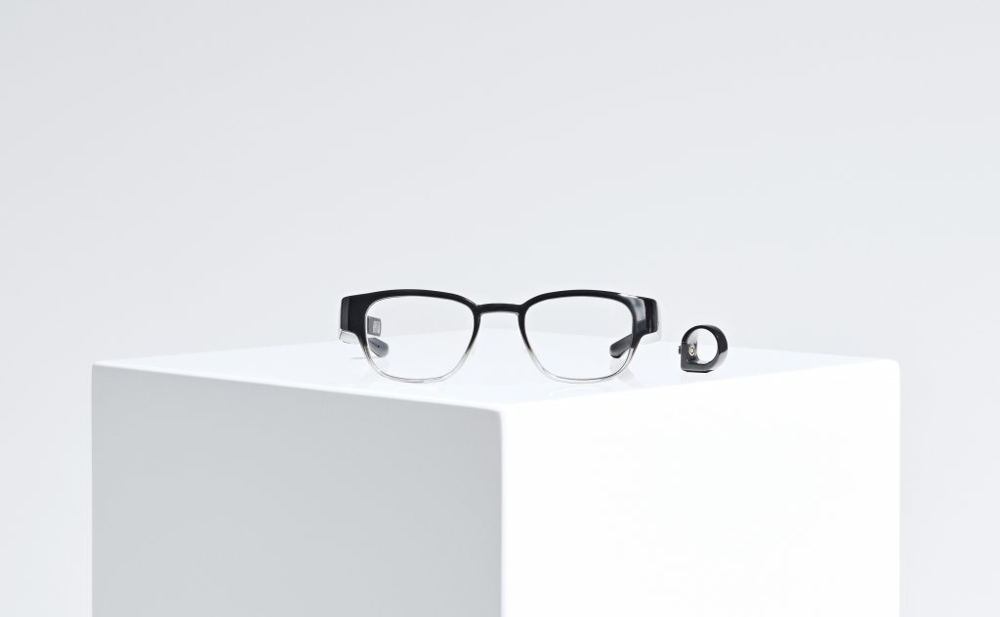
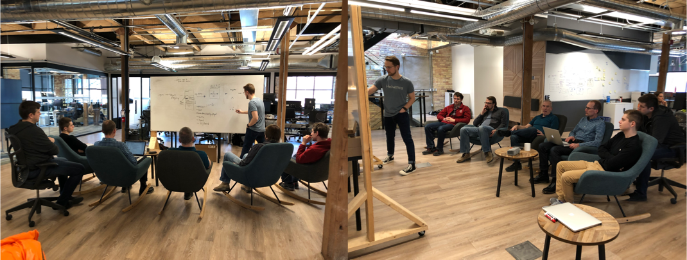
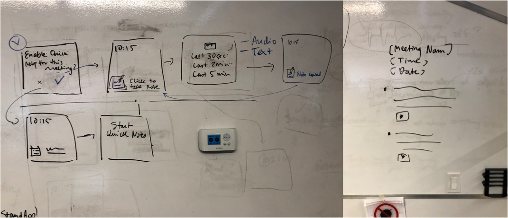
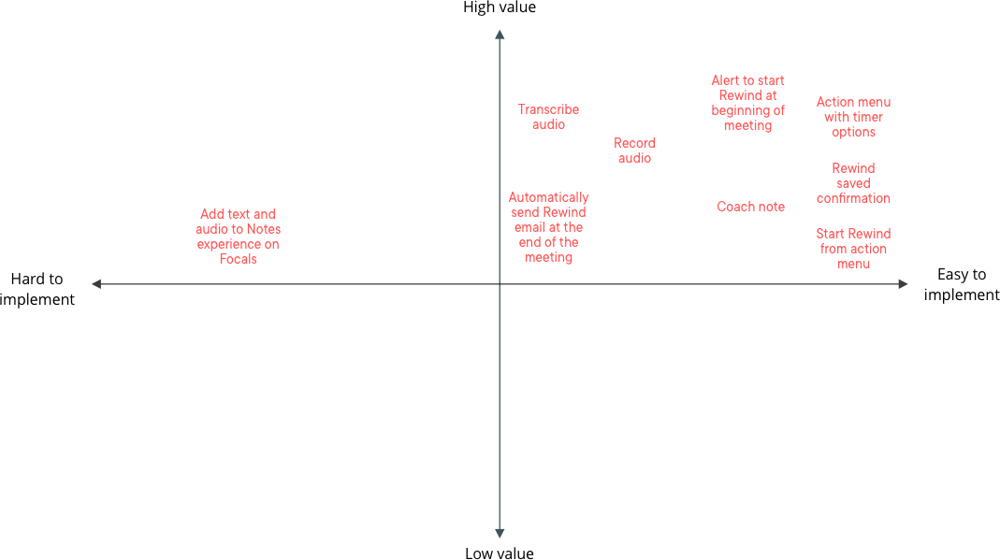
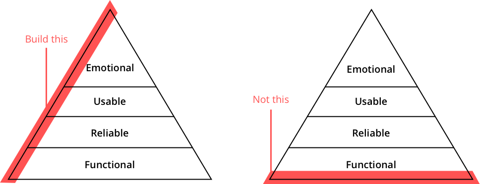
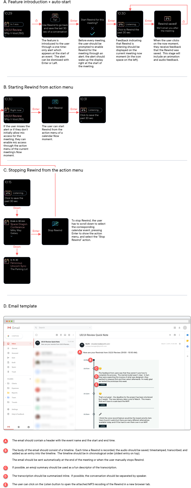
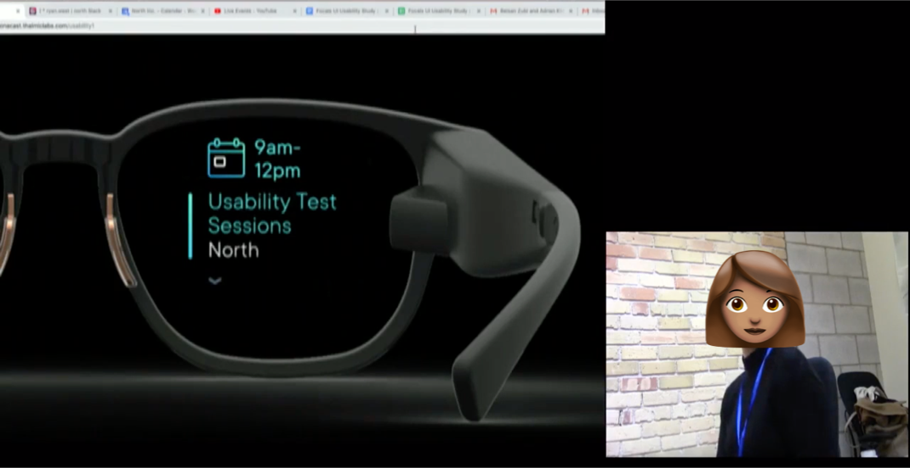
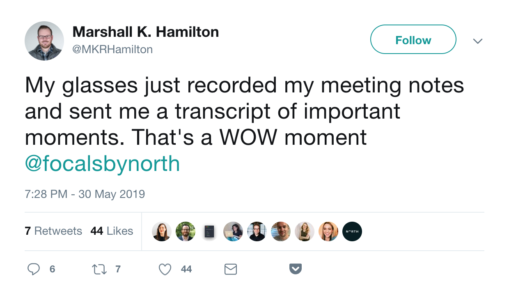

Designing for Focals was a challenge. For more than 3 years our team worked in secret, trying to understand who our prospective target user would be and what problems we could solve for them – all while keeping our progress confidential. When we finally launched in January 2019, we saw that we had been on the right track but knew that we needed to sharpen our focus now that we had access to real customers. In order to learn as quickly as possible and shorten our feedback loop, leadership had decided to shift the software organization to operate in one-week sprints.
This posed a challenge for the UX team since we were used to two-week sprints, working ahead of the developers by at least one sprint. Our process wouldn't work in this new paradigm, especially since both design and development were starting on the same day.
I combined components of several design methodologies we normally use at North (notably design sprints, design studios, and design charrettes) and distilled them using a Lean UX lens. This new process allowed UX to work with no lead time and it highly indexed on cross-functional collaboration between product owners, designers, and software teams as a means to save time. I proposed it to leadership and they agreed to trial it during the first sprint. We've been using it ever since.
In the past weeks, we've released more features than we ever have before and in a shorter time span. More importantly, our release cadence is keeping customers engaged with the product and their feedback is continually rolling in. We have a better understanding of our customers and their needs, and we're strongly tracking towards our product/market fit goals. The following is a high-level overview of the process I designed with examples of a retroactive voice-recording/note-taking feature we built called Rewind.
Prior to the start of a sprint, we needed to identify a very narrow, specific problem-space. Through segmented user research, we tried to understand any user needs Focals could potentially address for a target persona. In this pre-sprint research, we sought to identify three things: the persona (and idea of the person we're trying to design for), the problem scenario (the specific context in which a set of problems exist), and the needs that exist for the persona in that scenario.

Through our research we had discovered:
• The target persona: one of our highest-usage customer was the 'mobile manager' - a user who is constantly on-the-go, moving from meeting-to-meeting with a strong need to stay on top of their day.
• The scenario: we learned that mobile managers generally have a hard time staying focused in meetings. They're constantly worried about when/where their next meeting is and being adequately prepared for whatever is 'up next', all while trying to pay attention to the meeting they're currently in.
• The need: busy managers desire to be less stressed and distracted by their schedules so that they could be more present during meetings.
These research insights were shared with the teams in the form of a high-level product hypothesis:
As a busy manager, I’m constantly running from meeting-to-meeting. I value being prepared, present, and focused in and between and meetings. I need to become more focused on important conversations and reduce how many times I get distracted by my phone, laptop, and/or notebook during my meetings. We believe that as a busy manager, if:
• I can stay on top of when and where my next meeting is
• I can let participants know if I’m running late
• I can effortlessly take notes during a meeting and revisit them later
then I will wear Focals more because they will help me stay focused and productive.
In this statement, there are three needs that have been identified. Since had three teams, each was assigned one need. My team focused on addressing the last one:
“I can effortlessly take notes during a meeting and revisit the points at a later time”.
Once we knew what we were working on, we broke out into our war rooms, each equipped with lots of whiteboard space. In each war room, we had the software team, the product owner, and a product designer who facilitated the design session for the day.
As a team (meaning that we needed buy-in from every single person in the room, not just the product owner), we looked at the hypothesis and dissected it. We discussed user motivations, feelings, frustrations, what ideal outcomes could look like, and what worst-case scenarios could look like. Once we reached a shared understanding of the problem-space, we moved to formulating a specific hypothesis statement that focused on creating an outcome for the user instead of a feature. The hypothesis statement for the outcome outlines a belief, why the belief is important to the target persona, and most importantly, the success metrics.
In our sprint, we decided to take a risk (this is usually a good idea – the best insights come from risky ideas) and build a retroactive note-talking solution called Rewind. The idea was that, at the beginning of a meeting, the user would be prompted to enable Rewind. Once enabled, the user could, with a single click, save the last 30 seconds of conversation. At the end of the meeting, all of the Rewinds (transcriptions and audio clips) would be sent to the user via e-mail. Here's what the hypothesis statement for Rewind looked like:
We believe that quickly being able to take audio + text notes during a meeting will be a useful feature for the busy manager persona because it will help them experience less meeting anxiety, become more confident and prepared, all while maintaining presence and staying attentive during meetings. The expectation is that this feature will increase happiness and task success. The metrics that will prove this are:
• Decrease in written and typed notes during meetings (self-reported)
• Increase in self-rated post-meeting organization and preparedness
• Increase in presence during meetings (self-reported)
• For each meeting, user will use Rewind at least once
Deciding on success metrics took a long time but we knew that it would be the most important step. We referred to Google's HEART framework and decided to focus in on one or two of the following success criteria:
• Happiness: users attitudes collected from surveys or interviews
• Engagement: level of use involvement with the product or feature
• Adoption: rate of gaining new users for a product or feature
• Retention: the rate at which existing users are returning
• Task success: efficiency, effectiveness, and error rate
For Rewind, we decided to focus on increasing happiness and task success for the user. Once the criteria were chosen, we decided on specific metrics that would be used at the end of the sprint to validate these criteria and thus, the hypothesis.
This step is optional. We didn't do it for Rewind but we've done it for multiple sprints since. If the problem is fuzzy or the team is having difficulty coming up with design ideas, a handy technique mentioned in Sprint is for the team to split up and individually seek out sources of design inspiration that exemplify the hypothesis you're building for. This could include examples from competitor products, apps, movies, comic books — really anything! After 30 minutes, each person organizes their examples into themes, throws them into a slide deck, and shares them with the team.
Once the ideas started flowing, we gathered around a whiteboard and ideated on a solution. Everyone from the team contributed ideas as I sketched them out.

Since the objective of this process is to test risky ideas "cheaply", we decided to stick to using common controls and reusable system components whenever possible. We knew that resisting introducing anything new into the design system would reduce complexity of the implementation. The other thing that we had to keep reminding ourselves about was that unless an idea helps validate the hypothesis, it should be quickly dismissed.

When we reached an ideal solution, the team broke it down into user stories and mapped it on a matrix that compared the value of an individual story against ease of implementation. In the end, we only implemented the user stories that were high-value and easy to build (top-right quadrant).

This was a critical step. Since the goal for each one-week sprint is to deliver a fully-fledged, testable feature, it was important for the entire team to agree on the quality of the deliverable. The common misconception amongst the team was that we were delivering a prototype which was not the case! If a work-in-progress is delivered then the user feedback will reflect this quality of work. We had to remind ourselves that the goal was to deliver an MVP that had all the fundamental elements in the diagram shown below, but was still small enough to deliver in a week.
If it made sense for proving out the hypothesis, elements of emotional design such as micro-interactions, custom visuals, and animations were also discussed and agreed upon in this phase.

After scoping out user stories and agreeing on "Goldilocks" quality, the developers began framework implementation and looking into APIs while I translated our whiteboard ideas into a quick high-level interaction spec that could be shared with the team and QA. We were able to parallelize our work from the get-go.

After the feature was released it was important to get feedback as soon as possible. We looked back at the analytics implemented on-device and carried out a series of qualitative interviews and surveys in order to see if the feature was tracking against the success metrics.

If the feature succeeds as defined by the metrics, the team decides whether to leave it in its existing state, fix any bugs, or, if the implemented experience resonates with users, improve it further.
If the feature is a fail, then the team discusses why it failed, and whether or not it should be given a second chance (i.e. if any usability issues or critical bugs caused it to not be used) or if it was just an invalid hypothesis. If invalid, the feature is removed, we cut our losses, and move on to the next set of problems.

For Rewind, we had a lot of positive feedback on social media but user test data didn't reflect the same sentiment.
Rewind, along with our new design process for achieving product-market fit, launched in mid-March. Although Rewind was not a success, the insights that we learned from the process were invaluable. Ultimately, we learned that while the mental model of Rewind was not clear to users (users generally thought that the idea of retroactively recording something was unintuitive), the core of the feature – the ability to take transcribed voice notes immediately – resonated greatly. We plan to pivot and redesign the feature in a manner that aligns more closely with user expectations and needs.
More importantly, we gained a lot from the process. Communication and close collaboration between product, design, and software allowed us to move swiftly and behave more like a team. Through early retrospectives, here's what we learned:
The Pros :
•Team collaboration! Everyone is on the same page from the start of the sprint in terms of understanding motivations for the designing the outcome and the design itself.
•Developers gain empathy of the target user and their problem which makes them more invested in addressing it.
•Faster release cadence allows us to learn and pivot accordingly.
•The process is working! Although not every feature we've implemented has succeeded against the success metrics defined, overall we're on our way to achieving our product-market fit goals.
The Cons:
•Design debt! We've been able to see the design system be stress tested to its boundaries. We've allocated time every 4 sprints to address bugs and UX issues that have arisen from moving so quickly.
•Although collaboration within individual teams is excellent, collaboration between teams is not great. We're all moving so fast and independently that sometimes a solution one team designs conflicts or overlaps too much with the solution of another team. Because of this, we've established checkpoints throughout the design day of the sprint to make sure everyone is on the right track and that we're not stepping on each other's toes.
•Although some developers absolutely love the close collaboration with product and UX and dedicating an entire day of the sprint to designing a solution together, some some developers think that their time can be spent more effectively. Those who don't wish to participate are now able to work on bugs or technical debt tasks during the design day of the sprint.
I'm looking forward to continue refining this process with my colleagues and I'm excited to see what other process improvements can be made in the organization through design thinking.
SUMMARY
I established a new design process to help us build, release, and learn more quickly. I acted as design and research lead when applying the process, informing each iteration with the rest of the team.
MY ROLES